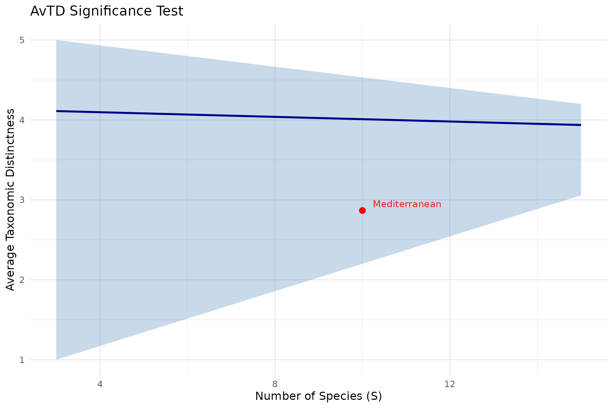

What Is Taxonomic Distinctness?
Clarke & Warwick (1995, 1998, 2001) developed a family of indices that measure how taxonomically spread out the species in a community are. Instead of counting species or measuring evenness, these indices ask: “How far apart are the species in the taxonomic tree?”
Two communities may have the same number of species, but if one contains species spanning many families and orders while the other has species from a single genus, the first is taxonomically more distinct.
library(taxdiv)
# Mediterranean forest community
community <- c(
Quercus_coccifera = 25,
Quercus_infectoria = 18,
Pinus_brutia = 30,
Pinus_nigra = 12,
Juniperus_excelsa = 8,
Juniperus_oxycedrus = 6,
Arbutus_andrachne = 15,
Styrax_officinalis = 4,
Cercis_siliquastrum = 3,
Olea_europaea = 10
)
tax_tree <- build_tax_tree(
species = names(community),
Genus = c("Quercus", "Quercus", "Pinus", "Pinus",
"Juniperus", "Juniperus", "Arbutus", "Styrax",
"Cercis", "Olea"),
Family = c("Fagaceae", "Fagaceae", "Pinaceae", "Pinaceae",
"Cupressaceae", "Cupressaceae", "Ericaceae", "Styracaceae",
"Fabaceae", "Oleaceae"),
Order = c("Fagales", "Fagales", "Pinales", "Pinales",
"Pinales", "Pinales", "Ericales", "Ericales",
"Fabales", "Lamiales")
)The Taxonomic Distance Matrix
All Clarke & Warwick indices are built on pairwise taxonomic distances. The distance between two species equals the number of steps up the taxonomic tree to reach their lowest common ancestor:
dist_mat <- tax_distance_matrix(tax_tree)
round(dist_mat, 2)
#> Quercus_coccifera Quercus_infectoria Pinus_brutia
#> Quercus_coccifera 0 1 3
#> Quercus_infectoria 1 0 3
#> Pinus_brutia 3 3 0
#> Pinus_nigra 3 3 1
#> Juniperus_excelsa 3 3 3
#> Juniperus_oxycedrus 3 3 3
#> Arbutus_andrachne 3 3 3
#> Styrax_officinalis 3 3 3
#> Cercis_siliquastrum 3 3 3
#> Olea_europaea 3 3 3
#> Pinus_nigra Juniperus_excelsa Juniperus_oxycedrus
#> Quercus_coccifera 3 3 3
#> Quercus_infectoria 3 3 3
#> Pinus_brutia 1 3 3
#> Pinus_nigra 0 3 3
#> Juniperus_excelsa 3 0 1
#> Juniperus_oxycedrus 3 1 0
#> Arbutus_andrachne 3 3 3
#> Styrax_officinalis 3 3 3
#> Cercis_siliquastrum 3 3 3
#> Olea_europaea 3 3 3
#> Arbutus_andrachne Styrax_officinalis Cercis_siliquastrum
#> Quercus_coccifera 3 3 3
#> Quercus_infectoria 3 3 3
#> Pinus_brutia 3 3 3
#> Pinus_nigra 3 3 3
#> Juniperus_excelsa 3 3 3
#> Juniperus_oxycedrus 3 3 3
#> Arbutus_andrachne 0 3 3
#> Styrax_officinalis 3 0 3
#> Cercis_siliquastrum 3 3 0
#> Olea_europaea 3 3 3
#> Olea_europaea
#> Quercus_coccifera 3
#> Quercus_infectoria 3
#> Pinus_brutia 3
#> Pinus_nigra 3
#> Juniperus_excelsa 3
#> Juniperus_oxycedrus 3
#> Arbutus_andrachne 3
#> Styrax_officinalis 3
#> Cercis_siliquastrum 3
#> Olea_europaea 0- Same genus (e.g., Quercus coccifera and Q. infectoria): distance = 1
- Same family, different genera: distance = 2
- Same order, different families: distance = 3
- Different orders: distance = 4 (maximum for a 4-level tree)
Distances are normalized to a 0–100 scale by dividing by the maximum possible path length.
The Four Indices
Delta — Taxonomic Diversity
What it measures: The average taxonomic distance between two randomly chosen individuals from the community.
Key property: Abundance-weighted. Communities where abundant species are taxonomically distant score higher.
where is the taxonomic distance between species and , and is the abundance of species .
Delta* — Taxonomic Distinctness (abundance-weighted)
What it measures: Same as Delta, but restricted to pairs of individuals from different species. This removes the diluting effect of within-species pairs.
Key property: Pure taxonomic signal, still weighted by abundance.
(Same formula as Delta, but excludes same-species pairs.)
ds <- delta_star(community, tax_tree)
cat("Delta*:", round(ds, 4), "\n")
#> Delta*: 2.7668AvTD (Delta+) — Average Taxonomic Distinctness
What it measures: The average taxonomic path length between all species pairs, using presence/absence only.
Key property: Independent of sample size and abundance. This makes AvTD the ideal index for comparing communities sampled with different effort levels or different methods.
where is the number of species.
spp <- names(community)
avg_td <- avtd(spp, tax_tree)
cat("AvTD (Delta+):", round(avg_td, 4), "\n")
#> AvTD (Delta+): 2.8667Why is sample-size independence important?
Suppose you are comparing forest plots where Plot A had 50 quadrats and Plot B had only 10. Shannon and Simpson will be biased toward Plot A (more individuals sampled = more species detected = higher index). AvTD avoids this because it only uses the species list, not abundances.
VarTD (Lambda+) — Variation in Taxonomic Distinctness
What it measures: The variance in pairwise taxonomic path lengths.
Key property: Detects unevenness in the taxonomic tree. A community where some species pairs are closely related while others are very distant will have high VarTD.
var_td <- vartd(spp, tax_tree)
cat("VarTD (Lambda+):", round(var_td, 4), "\n")
#> VarTD (Lambda+): 0.2489Interpretation: High VarTD combined with high AvTD means a community with both deep and shallow branches — taxonomically heterogeneous. Low VarTD with high AvTD means species are all roughly equidistant — a taxonomically balanced tree.
Comparing the Four Indices
cat("Delta (abundance-weighted diversity): ", round(d, 4), "\n")
#> Delta (abundance-weighted diversity): 2.3912
cat("Delta* (abundance-weighted distinctness):", round(ds, 4), "\n")
#> Delta* (abundance-weighted distinctness): 2.7668
cat("AvTD (presence/absence distinctness): ", round(avg_td, 4), "\n")
#> AvTD (presence/absence distinctness): 2.8667
cat("VarTD (variation in distinctness): ", round(var_td, 4), "\n")
#> VarTD (variation in distinctness): 0.2489| Index | Uses abundance? | Sample-size independent? | Best for |
|---|---|---|---|
| Delta | Yes | No | Comparing sites with equal sampling effort |
| Delta* | Yes | No | Isolating taxonomic signal from abundance effect |
| AvTD | No | Yes | Comparing sites with different sampling effort |
| VarTD | No | Yes | Detecting uneven taxonomic structure |
Significance Testing with Funnel Plots
How do you know if an observed AvTD or VarTD value is unusually low? Clarke & Warwick (2001) proposed a simulation approach:
- Define a master species pool (e.g., all species known from the region)
- Draw random subsets of size from this pool
- Compute AvTD (or VarTD) for each random subset
- Repeat many times to build an expected distribution
- Plot observed values against the 95% confidence funnel
If a community falls below the funnel, its taxonomic distinctness is significantly lower than expected by chance — suggesting taxonomic homogenization (e.g., due to environmental stress or habitat degradation).
Running the simulation
# Use the built-in anatolian_trees dataset as species pool
data(anatolian_trees)
sim <- simulate_td(
tax_tree = anatolian_trees,
s_range = c(3, 15),
n_sim = 99,
index = "avtd",
seed = 42
)
cat("Simulation complete.\n")
#> Simulation complete.
cat("Species pool size:", nrow(anatolian_trees), "\n")
#> Species pool size: 33Funnel plot
plot_funnel(sim,
observed = data.frame(
site = "Mediterranean",
s = length(community),
value = avg_td
),
index = "avtd",
title = "AvTD Significance Test")
How to read the funnel plot:
- Blue line: Mean expected AvTD for each subsample size
- Grey band: 95% confidence interval from simulations
- Red point: Your observed community
If the red point falls inside the funnel, your community’s taxonomic distinctness is within the expected range. If it falls below, the community is taxonomically impoverished relative to the regional species pool.
The funnel narrows with increasing species richness because larger samples tend to converge toward the pool’s average AvTD. Small samples show more variation, hence the wider funnel at the left.
When to Use Clarke & Warwick vs Ozkan pTO
| Situation | Recommended |
|---|---|
| Comparing sites with unequal sampling effort | AvTD (sample-size independent) |
| Need statistical significance testing | AvTD/VarTD + funnel plot |
| Want abundance-weighted taxonomic diversity | Delta or Ozkan pTO |
| Want to identify species contributions | Ozkan pTO (slicing procedure) |
| Need a complete analysis | Both (they answer different questions) |
The Clarke & Warwick and Ozkan pTO frameworks are complementary,
not competing. taxdiv computes both simultaneously through
compare_indices() and batch_analysis().
References
- Warwick, R.M. & Clarke, K.R. (1995). New ‘biodiversity’ measures reveal a decrease in taxonomic distinctness with increasing stress. Marine Ecology Progress Series, 129, 301-305.
- Clarke, K.R. & Warwick, R.M. (1998). A taxonomic distinctness index and its statistical properties. Journal of Applied Ecology, 35, 523-531.
- Clarke, K.R. & Warwick, R.M. (1999). The taxonomic distinctness measure of biodiversity: weighting of step lengths between hierarchical levels. Marine Ecology Progress Series, 184, 21-29.
- Clarke, K.R. & Warwick, R.M. (2001). A further biodiversity index applicable to species lists: variation in taxonomic distinctness. Marine Ecology Progress Series, 216, 265-278.